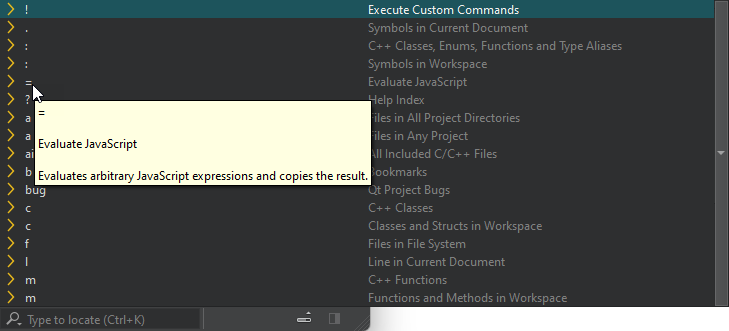

Perform calculations
To do basic calculations in the locator:
- Press Ctrl+K (Cmd+K on macOS) to activate the locator.
- Enter
=, followed by a space.
- Perform calculations.
Navigate through the entries and press Enter to copy the results to the clipboard
Built-in functions
Beside simple mathematical operations, like ((1 + 2) * 3), the following built-in functions exist:
| Function | Purpose |
|---|---|
| abs(x) | Returns the absolute value of x |
| acos(x) | Returns the arccosine of x, in radians |
| asin(x) | Returns the arcsine of x, in radians |
| atan(x) | Returns the arctangent of x, in radians |
| atan2(x, y) | Returns the arctangent of the quotient of its arguments |
| bin(x) | Returns the binary representation of x |
| ceil(x) | Returns the value of x rounded up to the next integer |
| cos(x) | Returns the cosine of x (x is in radians) |
| exp(x) | Returns the value of E to the power of x |
| e() | Returns Euler's number E (2.71828...) |
| floor(x) | Returns the value of x rounded down to the next integer |
| hex(x) | Returns the hexadecimal representation of x |
| log(x) | Returns the natural logarithm (base E) of x |
| max([value1[, value2[, ...]]]) | Returns the highest value of the given numbers |
| min([value1[, value2[, ...]]]) | Returns the lowest value of the given numbers |
| oct(x) | Returns the octal representation of x |
| pi() | Returns PI (3.14159...) |
| pow(x, y) | Returns the value of x to the power of y |
| random() | Returns a random number between 0 and 1 |
| round(x) | Returns the value of x rounded to the next integer |
| sin(x) | Returns the sine of x (x is in radians) |
| sqrt(x) | Returns the square root of x |
| tan(x) | Returns the tangent of x (x is in radians) |
See also Navigate with locator and Locator.